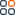

<link rel="stylesheet" href="../../../../assets/styles.css">
<link rel="stylesheet" href="https://maxcdn.bootstrapcdn.com/bootstrap/4.5.2/css/bootstrap.min.css" />
<link rel="stylesheet" href="https://cdn.jsdelivr.net/npm/bootstrap-icons@1.7.2/font/bootstrap-icons.css" />
<script src="https://ajax.googleapis.com/ajax/libs/jquery/3.5.1/jquery.min.js"></script>
<!-- <script src="https://cdnjs.cloudflare.com/ajax/libs/popper.js/1.16.0/umd/popper.min.js"></script> -->
<script src="https://maxcdn.bootstrapcdn.com/bootstrap/4.5.2/js/bootstrap.min.js"></script>
<!-- google material icon -->
<link href="https://fonts.googleapis.com/icon?family=Material+Icons" rel="stylesheet">

<nav class="navbar navbar-expand-lg navbar-light bg-white spyss_main_nav_bar p-0">
    <div class="container-fluid">
        <a class="navbar-brand ms-3" href="#"></a>
        <button class="navbar-toggler" type="button" data-bs-toggle="collapse" data-bs-target="#navbarNavDropdown"
            aria-controls="navbarNavDropdown" aria-expanded="false" aria-label="Toggle navigation">
            <span class="navbar-toggler-icon"></span>
        </button>
        <div class="collapse navbar-collapse" id="navbarNavDropdown">
            <ul class="navbar-nav mx-auto page_navigation">
                <li class="nav-item">
                    <a *ngIf="!log&&!sign"  class="nav-link position-relative" aria-current="page" routerLinkActive="active" routerLink="/" [routerLinkActiveOptions]="{exact : true}">Home</a>
                </li>
                <li class="nav-item">
                    <a *ngIf="!log&&!sign"  class="nav-link position-relative" routerLinkActive="active" routerLink="/about">About Us</a>
                </li>
                <li class="nav-item dropdown">
                    <a *ngIf="!log&&!sign"  class="nav-link dropdown-toggle position-relative" routerLinkActive="active"  href="#" id="navbarDropdownMenuLink"
                        role="button" data-bs-toggle="dropdown" aria-expanded="false">
                        Branches
                    </a>
                    <ul class="dropdown-menu branch_dropdown" aria-labelledby="navbarDropdownMenuLink">
                        <li><a class="dropdown-item"  routerLink="/nearest-branch"> Your
                                Nearest Branch</a></li>
                        <li><a class="dropdown-item" routerLink="/branch-list">
                                Branch List</a></li>
                    </ul>
                </li>
                <li class="nav-item">
                    <a *ngIf="!log&&!sign"  class="nav-link position-relative" routerLinkActive="active" routerLink="/gallery">Gallery</a>
                </li>
                <li class="nav-item">
                    <a *ngIf="!log&&!sign"  class="nav-link position-relative" routerLinkActive="active" routerLink="/events">Events</a>
                </li>
                <li class="nav-item">
                    <a *ngIf="!log&&!sign"  class="nav-link position-relative" routerLinkActive="active" routerLink="/contact">Contact Us</a>
                </li>
                <li class="nav-item">
                    <a *ngIf="!log&&!sign"  class="nav-link position-relative" routerLinkActive="active" href="#">Admin</a>
                </li>

            </ul>
            <ul class="user_navigation ms-auto">
                <li><a  *ngIf="!log&&!sign" routerLink="/dashboard" class="navbar_dashboard">Dashboard</a></li>
                <li><a  (click)="togglelogin()"  *ngIf="!log||sign" routerLink="/login" class="btn btn-primary">Login</a></li>
                <span  *ngIf="log&&!sign">You Don't have an account? </span>
                <span *ngIf="!log&&sign">Back to login</span>
                <li><a *ngIf="log&&!sign" (click)="toggleSignIn()" routerLink="/signup" class="btn btn-primary">Sign Up</a></li>
            </ul>
        </div>
    </div>
</nav>